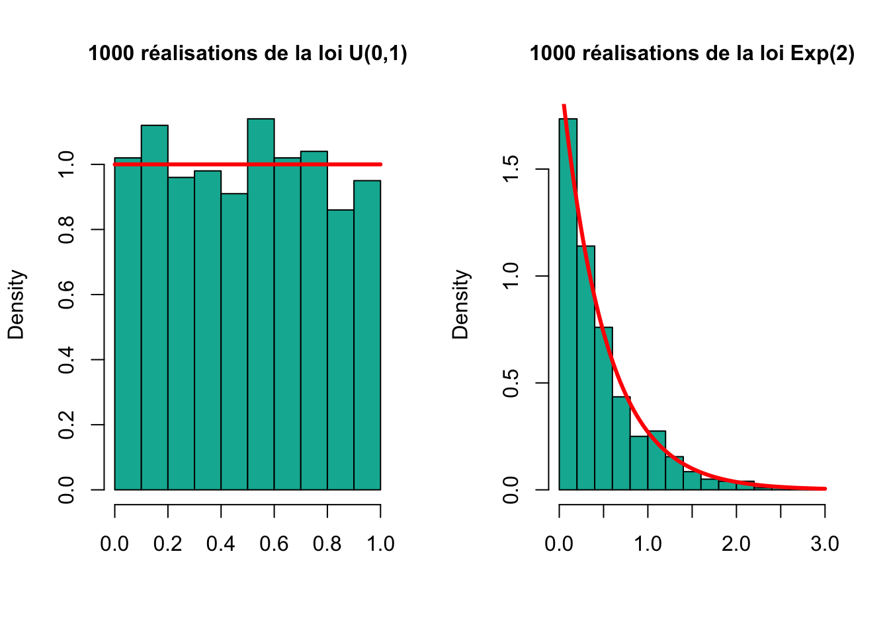

illustration numérique des théorèmes limites avec R
Réalisations de variables aléatoires
Pour générer (simuler) des réalisations de variables aléatoires on utilise la fonction qui commence par la lettre r (pour random) succédée par le nom de la loi que l’on souhaite simuler. Par exemple rnorm pour simuler des réalisations de la variable alétoire de loi normale. Tapez ?rnorm pour voir la liste des paramètres (arguments) de cette fonction.
rnorm(10)# génére 10 réalisations alétoires de la loi normale centrée réduite.
1. Simuler un vecteur de 1000 réalisations indépendantes de loi uniforme sur l’intervalle \([0,1]\). Simuler ensuite 1000 réalisations de la loi exponentielle de paramètre 2.
Extra: Afin de vérifier les simulations on peut afficher l’histogramme des réalisations et superposer avec la densité de la loi correspondante.

Fonction de densité
Pour calculer la densité d’une certaine loi, il suffit d’utiliser comme fonction le nom de la loi dans avec le préfixe d pour une densité. Taper ?dnorm pour comprendre le fonctionnement de cette commande.
2. Que vaut la densité de la loi normale centrée réduite en 0? Essayer la même chose pour la loi binomiale de paramètres \(n=10\) et \(p=0.5\).
Cette commande permet de tracer facilement des fonctions de densité.
3. Que se passe-t-il si l’on demande la fonction de densité de la loi binomiale en 0.3? Pourquoi?
4. Tracer la fonction de densité de la loi normale centrée réduite. Commencer par créer un vecteur d’abscisses à l’aide de la fonction seq(). Tracer ensuite la fonction de densité en ces points.
Il existe plusieurs paramètres réglables pour avoir des courbes de différents design.
5. Tracer un histogramme d’un vecteur de 10000 réalisations indépendantes d’une loi normale centrée réduite. Superposer l’histogramme avec la densité réelle de cette loi.
Fonction de répartition
Pour calculer la fonction de répartition d’une certaine loi on utilise le nom de la loi dans avec le préfixe p.
6. Que vaut la fonction de répartition de la loi normale centrée réduite en 0?
7. Tracer la fonction de répartition de la loi normale centrée réduite.
On peut également tracer des fonctions de répartitions empiriques (calculées sur un échantillon).
8. Créer un vecteur de 100 réalisations indépendantes de la loi de votre choix. Utiliser la fonction ecdf() pour construire la fonction de répartition empirique de votre vecteur. Puis superposer avec la fonction de répartition théorique.
Illustrations de théorèmes limites
Loi forte de grands nombres
On considère une variable \(X\) à valeurs dans \(\{0,1,3\}\), distribuée comme suit: \(P(X=0)=0.5, P(X=1)=0.25, P(X=3)=0.25\).
9. Proposer une façon de simuler \(X\). (Suggestion: utiliser la fonction sample()).
10. On considère \(X_1,X_2,\ldots\) une suite infinie de variables indépendantes de même loi que \(X\). Soit \(\overline{X}_n\) la moyenne empirique des \(X_i\) pour \(i \in \{1,\ldots,n\}\).
10.1 Simuler la suite des \(X_i\) pour \(i \in \{1,\ldots,10000\}\).
10.2 Produire un graphique représentant l’évolution de \(\overline{X}_n\) pour \(n\) variant de 1 à 10000. (Indication: penser à utiliser la fonction cumsum()).
10.3 Que constate-on? Pouvait-on s’y attendre?
Théorème central limite
On désire maintenant approfondir comment \(\overline{X}_{500}\) varie autour de sa valeur moyenne.
11. Proposer une transformation affine de \(\overline{X}_{500}\), de la forme \(Y=a \times (\overline{X}_{500} + b)\), qui suive approximativement la loi \(\mathcal{N}(0,1)\).
11.1 Simuler avec \(10000\) réalisations indépendantes de la variable \(Y\). Nous les noterons \(Y_1, \ldots, Y_{10000}\).
11.2 Confirmer l’approximation gaussienne en réalisant un histogramme des valeurs prises par les \(Y_j\) pour \(j \in \{1,\ldots,10000\}\), sans oublier de tracer la densité gaussienne correctement renormalisée. Commenter l’écart entre l’histogramme et la densité gaussienne.
Comparaison d’estimateurs
Soit \(\left(X_{1}, \ldots, X_{n}\right)\) un échantillon de la loi uniforme sur \([0, \theta]\) où \(\theta\) est un paramètre inconnu.
On considère les estimateurs convergents (on dit aussi consistants) suivants du paramètre \(\theta\).
1. Choisir une valeur de \(\theta\) et simuler 1000 échantillons de taille 100 de la loi uniforme sur \([0, \theta]\). Calculer pour chacun de ces échantillons la valeur prise par les 8 estimateurs.
On pourra ensuite créer une matrice ayant 1000 lignes et 8 colonnes dont la jème colonne contient les 1000 réalisations de l’estimateur \(T_{j}\):
2. Calculer la moyenne empirique et la variance empirique des 8 échantillons de taille 1000 ainsi obtenus. En déduire une estimation du biais et de l’erreur quadratique de chacun des 8 estimateurs.
On rappelle que pour un estimateur \(T\), le biais est \(E[T]-\theta\) et l’erreur quadratique est \(E\left[(T-\theta)^{2}\right]\).
3. Quels estimateus sont les moins biaisés? Et les estimateurs de risque quadratique minimale?
4. Représenter sur un même graphique les boites à moustaches (boxplots) des 8 estimateurs. Superposer sur le même graphique la vraie valeur du paramètre, en rouge. Commenter la pertinence de chacun des estimateurs: lequel préfereriez-vous utiliser?
En fiabilité, la durée de vie \(X\) d’un composant électronique est souvent modélisée par une loi de Weibull de paramètre \(\theta>0\). Une variable aleatoire \(X\) distribuée selon une loi de Weibull de paramètre \(\theta\) a pour densité:
A noter que quand \(\theta=1\) la loi de Weibull coincide avec la loi Exponentielle de paramètre égal à \(1\).
L’interprétation du paramètre \(\theta\) est la suivante. Quand \(\theta>1\) cela signifie que la propension à tomber en panne à l’instant \(t\) augmente avec \(t\), quand \(\theta<1\), c’est l’inverse. Enfin, quand \(\theta=1\) la propension à tomber en panne à l’instant \(t\) ne dépent pas de \(t\) (la loi exponentielle est sans mémoire). On entend ici par panne toute défaillance du composant électronique rendant celui-ci hors d’usage.
1. Représenter le graphe de la densité d’une loi de Weibull quand \(\theta = 1/2, 1, 2,\text{et } 3\). On se limitera à l’intervalle \([0,5]\) pour \(x\). Pour cette question, vous devez créer la fonction dweibull qui calcule la densité comme définie dans l’équation 1.
Pour estimer \(\theta\) on dispose de la durée de vie de \(n=1000\) composants. Les données (en milliers d’heures) se trouvent dans le fichier weibull.txt.
2. Chercher la valeur de \(\theta\) qui maximise la vraisemblance. (\(\theta \in [0,5]\)). On la notera \(\hat{\theta}\).
3. Afficher l’histogramme de l’échantillon et superposer la densité de Weibull de paramètre \(\hat{\theta}\).